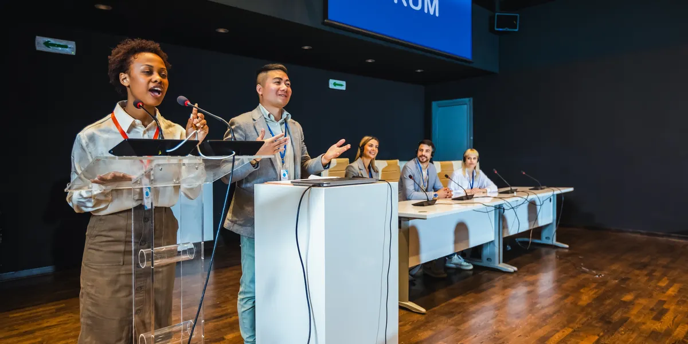

Pengertian
Kerjasama multilateral adalah bentuk kerjasama internasional yang melibatkan tiga negara atau lebih untuk mencapai tujuan bersama dalam berbagai bidang seperti ekonomi, politik, keamanan, sosial, dan lingkungan.
Tujuan dan Manfaat
- Mempererat persahabatan dan hubungan antar negara.
- Menciptakan perdamaian dan keamanan dunia.
- Meningkatkan pertumbuhan ekonomi global.
- Mengatasi isu-isu global bersama seperti perubahan iklim, terorisme, dan lain-lain.
- Mempromosikan nilai-nilai universal seperti HAM dan demokrasi.
- Memfasilitasi pertukaran pengetahuan dan teknologi antar negara.
- Meningkatkan posisi tawar negara-negara berkembang.
- Mencegah konflik dan menyelesaikan sengketa secara damai.
- Memberikan bantuan kemanusiaan dan pembangunan.
- Menetapkan standar dan aturan global di berbagai bidang.
Hubungan dengan SDGs 14

Global Ocean Alliance
Global Ocean Alliance (GOA) adalah koalisi global yang terdiri dari ilmuwan, peneliti, lembaga pendidikan, LSM, dan sektor swasta yang bekerja sama untuk melindungi dan mengelola lautan secara berkelanjutan melalui sains, teknologi, kebijakan, dan edukasi. GOA berupaya menjaga agar lautan tetap sehat dan mampu mendukung keanekaragaman hayati, regulasi iklim, serta kehidupan manusia di masa depan. Melalui kolaborasi internasional, GOA mendorong konservasi laut, mitigasi perubahan iklim, dan restorasi ekosistem laut dengan target ambisius seperti perlindungan kawasan laut global.